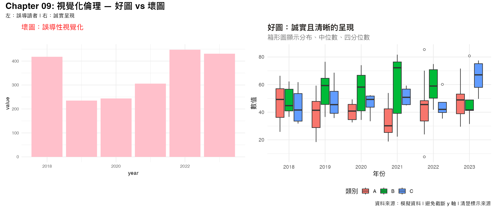

R VIBE CODING
09. 視覺化倫理與常見陷阱
常見的視覺化問題
1. 截斷 y 軸
把 y 軸從 0 開始截斷，會誇大差異。
2. 雙軸圖的誤用
兩個不同尺度的 y 軸容易誤導讀者。
3. 3D 圖表的問題
3D 效果會扭曲比例，難以正確判讀。
4. 過度使用顏色
太多顏色會造成視覺疲勞。
R 實際輸出
下面這張圖展示了「好圖」和「壞圖」的對比：

練習題
找一張你覺得「有倫理問題」的圖，解釋原因。
用 R 重現一張「截斷 y 軸」的圖，並解釋為什麼這是問題。
設計一個「色盲友善」的配色方案。
R 程式碼下載
下載 chapter09_code.R
基礎篇已完成！
返回首頁